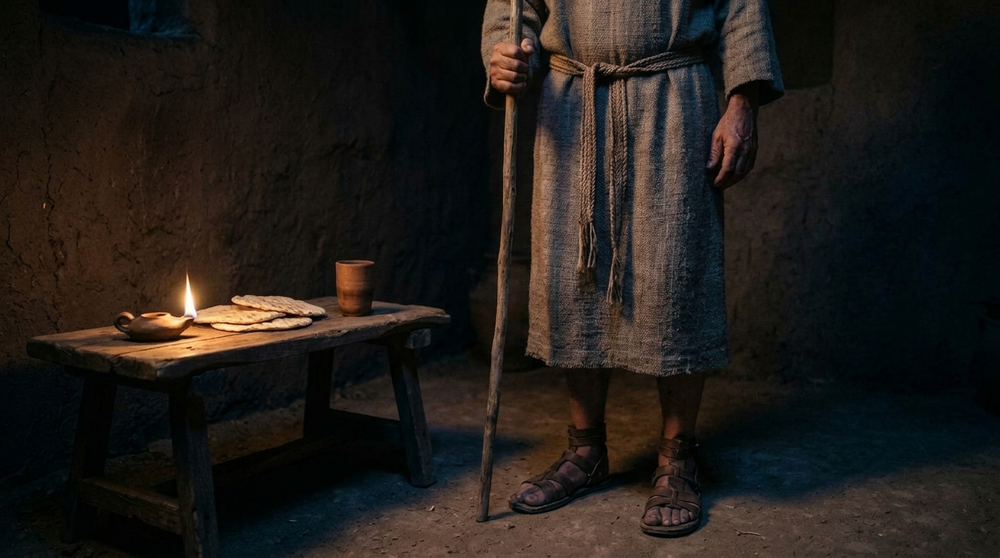
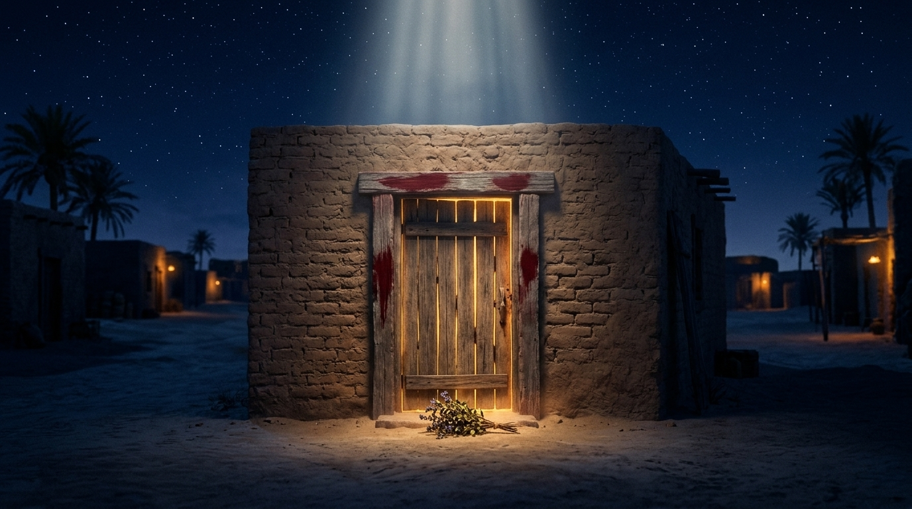

Exodus 12:11
Dressed for a trip they hadn’t taken yet.
Israel ate this meal belted, in sandals, staff in hand (12:11), while they were still slaves. Nothing had changed yet, and they got ready anyway because God said they were leaving. That’s what faith looked like that night: obeying before seeing. When a student is stuck waiting on God about something, help them ask what getting ready would look like right now. Maybe it means praying as if he will answer, doing the next right thing, or acting on what God has already said, even before anything changes.

Exodus 12:23
God guards the door.
Picture an Israelite family that night. They had been told death would move through Egypt at midnight (11:4–5), and all that stood between them and it was a wooden door with blood on the frame. Every sound outside would have been a question: is it coming in here? Exodus 12:23 answers with God at the door: the LORD “will pass over the door and will not allow the destroyer to enter your houses.” Isaiah uses the same verb for God shielding Jerusalem like a bird over its nest (Isa 31:5), and Exodus calls this “a night of watching by the LORD” (12:42). Their safety didn’t depend on how brave they felt or how strong the door was. It depended on God keeping his word. A lot of anxiety in students is the same fear that something bad will get in: failure, rejection, a family falling apart. Point them to a God who never slumbers (Ps 121:4). The same God who kept watch that night keeps watch on the nights anxiety won’t let them sleep.